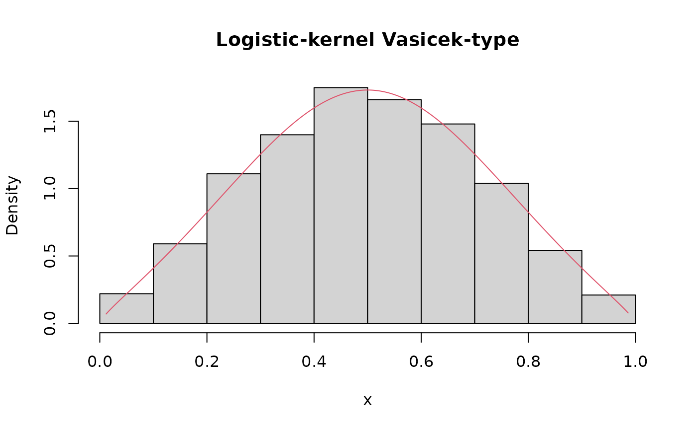
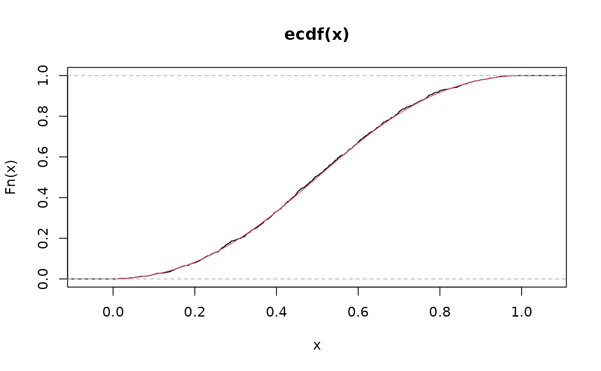

Logistic-kernel Vasicek-type distribution with quantile parameterization
LVASIQ.RdThe function LVASIQ() defines the logistic-kernel Vasicek-type
distribution as a gamlss.family object for conditional quantile
regression. The functions dLVASIQ, pLVASIQ,
qLVASIQ, and rLVASIQ give the density, distribution
function, quantile function, and random generation. The parameter
\(\mu\) is the conditional \(\tau\)-th quantile
(\(0<\mu<1\)), \(\sigma\) is a shape parameter
(\(0<\sigma<1\)), and \(\tau\in(0,1)\) is fixed by the user.
The fixed level is supplied through the quantile argument.
Usage
dLVASIQ(x, mu, sigma, quantile = 0.5, log = FALSE)
pLVASIQ(q, mu, sigma, quantile = 0.5, lower.tail = TRUE, log.p = FALSE)
qLVASIQ(p, mu, sigma, quantile = 0.5, lower.tail = TRUE, log.p = FALSE)
rLVASIQ(n, mu, sigma, quantile = 0.5)
LVASIQ(quantile = 0.5, mu.link = "logit", sigma.link = "logit")Arguments
- x
Vector of quantiles in \((0,1)\).
- mu
Vector of \(\tau\)-quantiles, \(0<\mu<1\).
- sigma
Vector of shape parameter values, \(0<\sigma<1\).
- quantile
Fixed quantile level \(\tau\in(0,1)\) represented by \(\mu\), used in the distribution functions and in
LVASIQ().- log
Logical; if
TRUE, the log-density is returned.- q
Vector of values in \([0,1]\) at which the cumulative distribution function is evaluated.
- lower.tail
Logical; if
TRUE, probabilities are \(P(X\le x)\).- log.p
Logical; if
TRUE, probabilitiespare given aslog(p)or cumulative probabilities are returned on the log scale, as appropriate.- p
Vector of probabilities in \([0,1]\) on the probability scale.
- n
Number of observations.
- mu.link
Link function for the \(\mu\) parameter.
- sigma.link
Link function for the \(\sigma\) parameter.
Value
dLVASIQ gives the density, pLVASIQ the distribution function,
qLVASIQ the quantile function, and rLVASIQ generates random
deviates. LVASIQ() returns a gamlss.family object.
Details
Let \(\mathrm{logit}(u)= \log\left(\frac{u}{1-u}\right)\) and \(\Lambda(z)=\frac{1}{1+e^{-z}}\), with \(\lambda(z)= \Lambda(z)\left[1-\Lambda(z)\right]\). Define $$z = \sqrt{\frac{1-\sigma}{\sigma}} \left[\mathrm{logit}(x)-\mathrm{logit}(\mu)\right] +\mathrm{logit}(\tau).$$
Cumulative distribution function $$F(x\mid\mu,\sigma,\tau)=\Lambda(z).$$
Probability density function $$f(x\mid\mu,\sigma,\tau)= \sqrt{\frac{1-\sigma}{\sigma}} \frac{\lambda(z)}{x(1-x)}.$$
Quantile function $$Q(p\mid\mu,\sigma,\tau)= \Lambda\!\left\{ \mathrm{logit}(\mu) +\sqrt{\frac{\sigma}{1-\sigma}} \left[\mathrm{logit}(p)-\mathrm{logit}(\tau)\right] \right\}.$$
By construction \(Q(\tau)=\mu\), i.e. \(\mu\) is the \(\tau\)-th quantile. Note that, unlike the normal-kernel Vasicek distribution, the logistic kernel does not yield a closed-form mean; in particular \(E(X)\neq\mu\) in general.
The GAMLSS family uses analytical derivatives. For one observation, let
$$a=\sqrt{\frac{1-\sigma}{\sigma}},\qquad
d=\mathrm{logit}(y)-\mathrm{logit}(\mu),\qquad
P=\Lambda\left\{ad+\mathrm{logit}(\tau)\right\},$$
and define
$$V=P(1-P),\qquad
b=\frac{1}{2\sigma(1-\sigma)},\qquad
g=\frac{1}{\mu(1-\mu)}.$$
If \(\ell\) denotes the individual log-likelihood contribution, the
first derivatives are
$$\frac{\partial\ell}{\partial\mu}
=-ag(1-2P)$$
and
$$\frac{\partial\ell}{\partial\sigma}
=-b\left\{1+ad(1-2P)\right\}.$$
The second and cross derivatives are
$$\frac{\partial^2\ell}{\partial\mu^2}
=g^2\left\{
a(1-2\mu)(1-2P)-2a^2V
\right\},$$
$$\frac{\partial^2\ell}{\partial\mu\,\partial\sigma}
=abg\left\{
(1-2P)-2adV
\right\},$$
and
$$\frac{\partial^2\ell}{\partial\sigma^2}
=b^2\left\{
2(1-2\sigma)
+ad(3-4\sigma)(1-2P)
-2a^2d^2V
\right\}.$$
These expressions are evaluated directly by LVASIQ(); numerical
differentiation is not used. The mean and variance
components of the family object use numerical quadrature because the
corresponding moments do not have elementary closed forms.
Note
The level supplied through quantile is stored in the family
definition and embedded as a numeric literal in the family components
used by GAMLSS; no global variable is required.
References
Mazucheli, J., Alves, B., Korkmaz, M. C. and Leiva, V. (2022). Vasicek quantile and mean regression models for bounded data: New formulation, mathematical derivations, and numerical applications. Mathematics, 10, 1389.
Vasicek, O. A. (2002). The distribution of loan portfolio value. Risk, 15(12), 160–162.
Witzany, J. (2013). A note on the Vasicek's model with the logistic distribution. Ekonomický časopis (Journal of Economics), 61(10), 1053–1066.
Author
Josmar Mazucheli jmazucheli@gmail.com
Examples
set.seed(123)
x <- rLVASIQ(n = 1000, mu = 0.50, sigma = 0.25, quantile = 0.5)
S <- seq(min(x), max(x), length.out = 1000)
hist(x, prob = TRUE, main = "Logistic-kernel Vasicek-type")
lines(S, dLVASIQ(x = S, mu = 0.50, sigma = 0.25, quantile = 0.5), col = 2)

plot(ecdf(x))
lines(S, pLVASIQ(q = S, mu = 0.50, sigma = 0.25, quantile = 0.5), col = 2)

data <- data.frame(
y = rLVASIQ(n = 100, mu = 0.50, sigma = 0.25, quantile = 0.50)
)
fit <- gamlss::gamlss(
y ~ 1,
data = data,
family = LVASIQ(
quantile = 0.50, mu.link = "logit", sigma.link = "logit"
)
)
#> GAMLSS-RS iteration 1: Global Deviance = -55.5222
#> GAMLSS-RS iteration 2: Global Deviance = -55.5263
#> GAMLSS-RS iteration 3: Global Deviance = -55.5263
fitted(fit, what = "mu")[1:5]
#> [1] 0.4838787 0.4838787 0.4838787 0.4838787 0.4838787